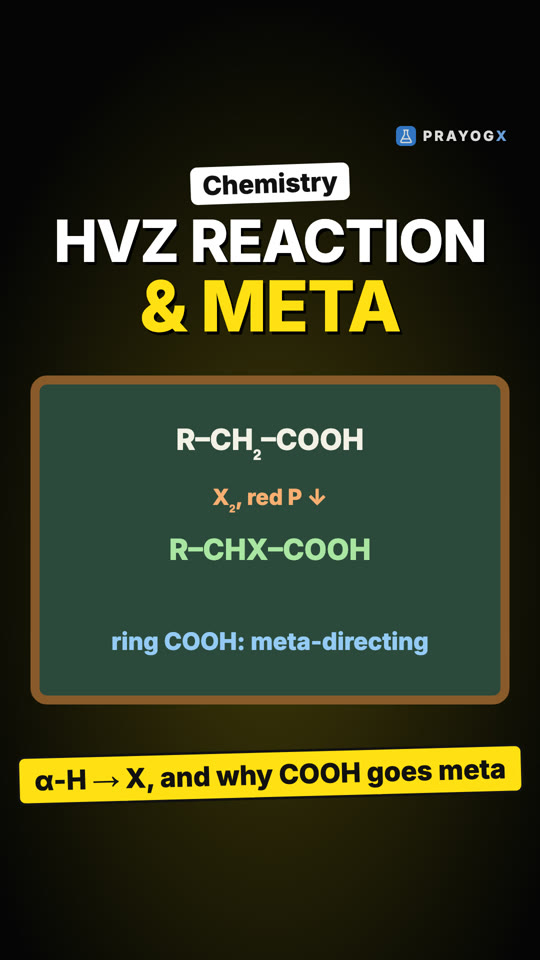
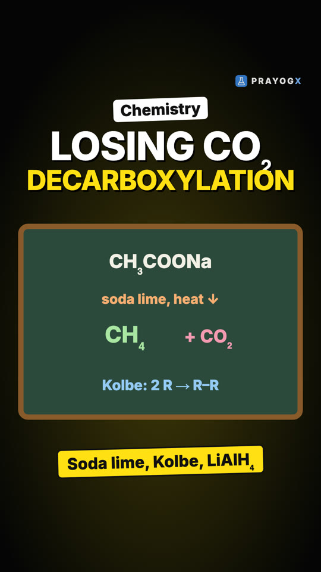
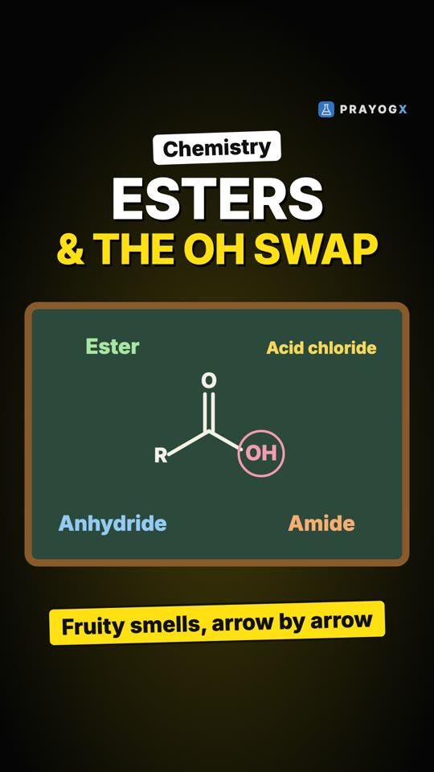

Choose your class
Every subject is laid out chapter by chapter. Each topic has a short Doodle video, notes you can download and a quick quiz.
Class 9Motion, matter, the cell and number systems: the foundations of school science and maths.ScienceMathematics21 videosClass 10Light, electricity, chemical reactions, life processes and the algebra and geometry of board year.ScienceMathematics9 videosClass 11Mechanics, thermodynamics, atomic structure, bonding, functions and the living world.PhysicsChemistryMathematicsBiology16 videosClass 12Electromagnetism, optics, modern physics, solutions and kinetics, calculus and genetics.PhysicsChemistryMathematicsBiology23 videosExtra / SupplementaryCurious questions beyond the syllabus: why the sky is blue, why we yawn, why 0.999… equals 1, and more.ScienceBiologyMathematics11 videos
Newest videos

HVZ Reaction and Why Benzoic Acid Goes MetaTwo places a carboxylic acid can be substituted: the α-carbon (HVZ: X₂ and red phosphorus, then water) and the benzene ring of an aromatic acid, where –COOH is deactivating and meta-directing and blocks Friedel-Crafts reactions.Aldehydes, Ketones and Carboxylic Acids · Chemistry
Losing CO₂: Decarboxylation, Kolbe Electrolysis and ReductionHow the –COOH group itself changes: soda lime removes it as CO₂ (one carbon less), Kolbe electrolysis joins two alkyl groups, and LiAlH₄ or diborane reduces it to a primary alcohol, while NaBH₄ cannot.Aldehydes, Ketones and Carboxylic Acids · Chemistry
Esterification and the C–OH Swap: Esters, Acid Chlorides, Anhydrides, AmidesFruity esters from an acid and an alcohol, with the acid-catalysed mechanism drawn arrow by arrow, and three more ways to replace the –OH of –COOH: acid chlorides (best with SOCl₂), anhydrides and amides.Aldehydes, Ketones and Carboxylic Acids · Chemistry Why Carboxylic Acids Are Acidic: Resonance and SubstituentsWhy vinegar fizzes with baking soda: the carboxylate ion shares its charge equally between two oxygens (resonance, arrow by arrow), which makes carboxylic acids stronger than phenols and alcohols; electron-withdrawing groups such as chlorine make them stronger still.Aldehydes, Ketones and Carboxylic Acids · Chemistry
Why Carboxylic Acids Are Acidic: Resonance and SubstituentsWhy vinegar fizzes with baking soda: the carboxylate ion shares its charge equally between two oxygens (resonance, arrow by arrow), which makes carboxylic acids stronger than phenols and alcohols; electron-withdrawing groups such as chlorine make them stronger still.Aldehydes, Ketones and Carboxylic Acids · Chemistry Why Carboxylic Acids Boil So High: Hydrogen-Bonded DimersFour molecules of about the same mass boil from 0 °C to 118 °C. Carboxylic acids win because two hydrogen bonds join them into dimers that survive even in the vapour; the same dimers double acetic acid's measured molar mass in benzene.Aldehydes, Ketones and Carboxylic Acids · Chemistry
Why Carboxylic Acids Boil So High: Hydrogen-Bonded DimersFour molecules of about the same mass boil from 0 °C to 118 °C. Carboxylic acids win because two hydrogen bonds join them into dimers that survive even in the vapour; the same dimers double acetic acid's measured molar mass in benzene.Aldehydes, Ketones and Carboxylic Acids · Chemistry Preparing Carboxylic Acids: Four RoutesFour ways to make a carboxylic acid: oxidising primary alcohols and aldehydes, oxidising alkylbenzenes, hydrolysing nitriles and esters, and adding a Grignard reagent to dry ice, which adds one carbon (mechanism with curved arrows).Aldehydes, Ketones and Carboxylic Acids · Chemistry
Preparing Carboxylic Acids: Four RoutesFour ways to make a carboxylic acid: oxidising primary alcohols and aldehydes, oxidising alkylbenzenes, hydrolysing nitriles and esters, and adding a Grignard reagent to dry ice, which adds one carbon (mechanism with curved arrows).Aldehydes, Ketones and Carboxylic Acids · Chemistry